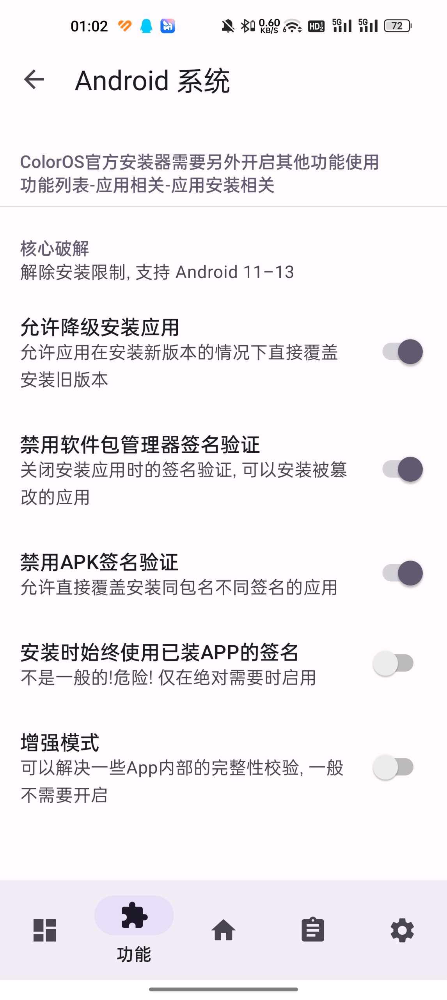
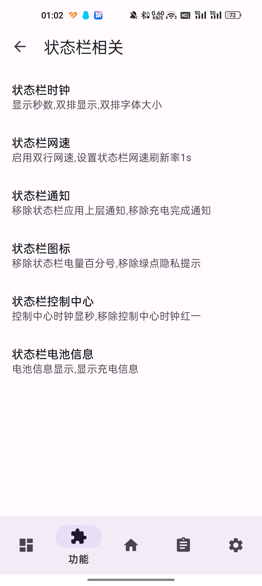

LuckyTool 深度盘点：ColorOS 上最能干的 Hook 模块到底能改多少东西
LuckyTool 用 YukiHookAPI 覆盖 16 类系统组件，从核心破解到状态栏时钟，从桌面布局到游戏助手，本文按能力域系统性梳理它能做什么、亮点在哪、什么场景用得上。
如果你手上握着一台 ColorOS 或一加 OxygenOS 的设备，又恰好装了 LSPosed，那 LuckyTool官网 大概率是你绕不开的一个名字。它不是那种单功能的小插件，而是一个把"能改什么"这件事几乎铺满整个系统的 Hook 模块——从最底层的包管理器签名校验，到你每天盯着看的状态栏时钟、锁屏组件、桌面图标，再到游戏助手和电池设置，它都有开关。这篇盘点试着按能力域把它铺开，聊聊每个区域能改什么、改了之后是什么效果，以及哪些功能是真有用、哪些是图个新鲜。
核心破解：包管理器层的"开后门"
LuckyTool 最硬核的一组功能集中在 SystemFramework 进程的 Hook 上——它直接拦截 Android 系统包管理器的签名验证逻辑。这意味着什么？你可以降级安装应用、可以装不同签名的同包名应用、可以给 APK 换签名。对于玩机的人来说，这一组开关的价值非常直接：Google Play 上某个应用更新了新版本反而难用？直接装回旧版 APK 就行，官方下载的安装包签名匹配设备，系统不会再弹"签名不一致"的拒绝。

需要注意的一点：SystemFramework 的 Hook 只管系统层面的包管理器。ColorOS 自带的官方安装器在安装过程中还会做一轮额外检测，所以如果你开了签名绕过但还是装不上，大概率还得去「应用相关 → 应用安装相关」那个分区把对应的开关也打开——两个分区 Hook 的是不同进程，互相独立。
SystemUI：改动最密集的主战场
如果说核心破解是"能用但不常用"，那 SystemUI 分区就是你几乎每天都能感受到变化的地方。状态栏、锁屏、下拉通知栏、控制中心，这一整块界面全在 SystemUI 进程里实现，也是 LuckyTool 功能最密集的 Hook 目标。
状态栏时钟是一个典型——预设格式、自定义格式、加农历、双排显示、换字体，甚至还有一个叫"红一模式"的开关用来简化时钟样式。类似的还有状态栏网速（每秒刷新、双排、移除单位）、状态栏通知（移除充电完成通知、移除绿点隐私提示、长按修改通知行为）、状态栏图标（精简 WiFi/移动数据/蓝牙等图标的冗余元素）。控制中心这边可以开时钟显秒、移除"我的设备"卡片、调整磁贴行列布局、强制媒体播放器常驻。锁屏分区则有组件居中、双时钟增强、按钮精简、72 小时密码验证跳过，还有一个 AOD（息屏显示）的白名单机制——可以指定哪些应用的通知在息屏上显示、哪些音乐应用可以在息屏上控歌。

红一模式这个设计挺有意思，它不是某个独立功能，而是 LuckyTool 贯穿多个分区的一种"样式简化开关"——状态栏时钟有红一模式，锁屏时钟有红一模式，桌面时钟组件也有红一模式。开启之后就是去掉装饰性的边框、背景、分割线，让界面回归纯文字和极简线条，对于喜欢干净界面的人来说是个统一风格的好东西。
Launcher：桌面启动器的微调
ColorOS 桌面 Launcher 负责 App 图标、文件夹、分页、最近任务这些元素。LuckyTool 在这里的改动偏"细节控"——移除 App 更新的小红点、移除快捷方式徽章、移除分身标识；移除分页指示条、限制文件夹分页滑动；设置文件夹列数；移除最近任务的清除按钮、让长按任务卡片跳应用详情页；还有一个"增加最大行列支持"，可以让桌面网格比系统默认更密，适合图标党。这些改动单独看都不大，但叠加起来能让桌面的观感和操作手感明显更贴合自己的习惯。
GameAssistant：游戏助手的解封
OPlus 的游戏助手（GameSpace）是一个独立进程，LuckyTool 在这里的 Hook 点也挺多。比较实用的几个：移除游戏滤镜的根限制（让你能用需要 root 的滤镜）、移除开机动画和福利页（进游戏空间更快）、启用开发者页面、启用 X-Mode 或 GT 模式、启用 Adreno GPU 控制器、启用赛事模式同时移除赛事音效（音效太吵的时候有用）。还有一个 VIP 限制移除——让你不用开通会员就能用上一些本来只给付费用户的功能。
这组功能的坑也相对明显：GameAssistant 是独立进程，如果你只勾了 SystemUI 没勾 GameAssistant，那游戏助手的开关一个都不会生效。很多人第一次用 LuckyTool 开了一堆功能但觉得没反应，回头翻 LuckyTool文档 发现是作用域没勾全。
系统应用增强：被 OEM 藏起来的那些入口
除了上面几个主战场，LuckyTool 还有一组功能是把 ColorOS 藏起来的设置入口重新暴露出来。最典型的就是电池健康——从 Android 10 开始 Android 支持在设置里显示电池设计容量、当前实际容量、循环次数和健康度百分比，但 ColorOS 默认把这个功能藏了。LuckyTool 一开，"电池健康"选项直接出现在设置里，对用了一两年的老设备特别有用——健康度低于 80% 的时候就得考虑换电池了。
同一个分区里还有性能模式和待机优化入口的恢复。ColorOS 默认把这两个设置埋在「电池 → 更多设置」里，路径很深，LuckyTool 把它们提到电池设置主页面，少点好几层。还有一个"修复电池健康数据显示"——某些 ColorOS 版本电池健康数据显示异常，开了就能刷新。
另一个实用功能是 APK 安装扫描跳过。ColorOS 安装 APK 时默认会做一轮安全扫描，3 到 10 秒之后才弹出安装确认界面。如果你的 APK 来源都是可信渠道（GitHub Release、官方网站），这个扫描其实没必要等，LuckyTool 可以直接跳过。当然它也坦白说了能跳过——ColorOS 的扫描能抓明显恶意代码和病毒库匹配，但抓不住新型恶意软件和加壳混淆的 APK，所以来路不明的 APK 还是留着扫描为好。
短板也要说
盘点了这么多能力，LuckyTool 也不是没有局限。首先它只支持 ColorOS/OPlus 生态的设备，一加、OPPO、realme 基本上都在覆盖范围内，但其他 Android 品牌（小米、三星、华为）用不了。其次它依赖 LSPosed 框架，这意味着你的设备必须解锁 bootloader 并刷入 Magisk，对于不想折腾的用户来说门槛不低。第三，作用域配置需要一点耐心——16 个进程每个都可能需要单独勾选，勾完还得重启作用域才能生效，第一次上手的人很容易在这一步卡住。
功能数量多也带来一个副作用：开关太多，新用户进来容易懵。有些功能之间有隐性依赖（比如核心破解开关和应用安装开关的配合），文档虽然讲了但不明显，需要踩过坑才知道。另外，ColorOS 版本迭代快，某些旧版本上的功能在新版本上可能已经被系统原生实现或者被封了，开关开了也没反应。
什么样的人该用它
LuckyTool 适合三类人。第一类是已经刷了 LSPosed 的 ColorOS 玩机用户，不管你之前用不用其他模块，LuckyTool 都值得装上试一遍——它覆盖的功能面太广了，总有几个开关是你一直在找的。第二类是对系统细节有执念的用户——想让状态栏时钟显示农历加秒、想让文件夹多放几列、想把控制中心磁贴调得更顺手，这些小改动叠加起来就是自己用着舒服的界面。第三类是设备用了一两年的老用户，电池健康入口和性能模式恢复这两个功能尤其实用，能帮你了解电池状态、调整调度策略，延长老设备的使用寿命。
反过来，如果你用的不是 ColorOS、不想解锁 bootloader、或者对系统界面的默认布局没什么意见，那 LuckyTool 大概率不会给你带来多少价值——它不是那种"装了就有质的飞跃"的工具，而是一把给玩机人准备的精细螺丝刀。
LuckyTool 的开发迭代速度不慢，新功能跟着 ColorOS 版本走，作用域覆盖现在已经到了 16 类系统组件。它的功能面板做得也算清楚，按分区归类之后找开关不算费劲。整体来看，如果你是 ColorOS 生态里的折腾党，它应该是 LSPosed 模块清单里的常驻项。关于这个模块的开源资料归档，GitHub 上有完整源码镜像，Gitee 和 GitCode 各备了一份国内可直连的拷贝，访问速度更友好。